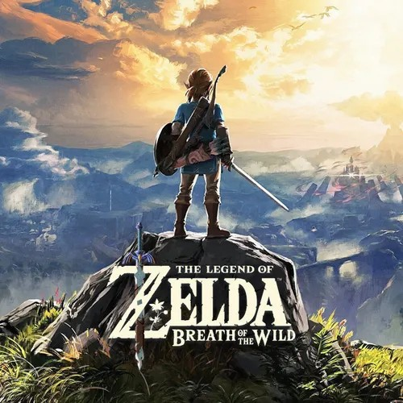
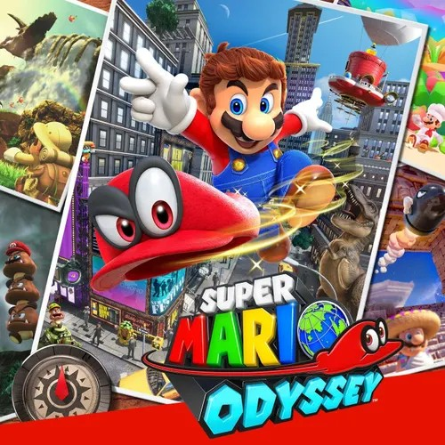
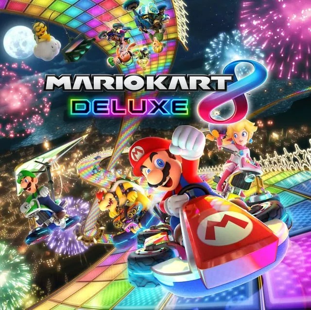
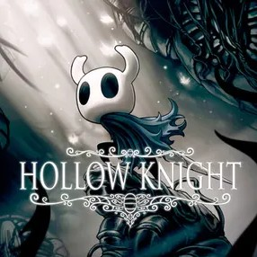
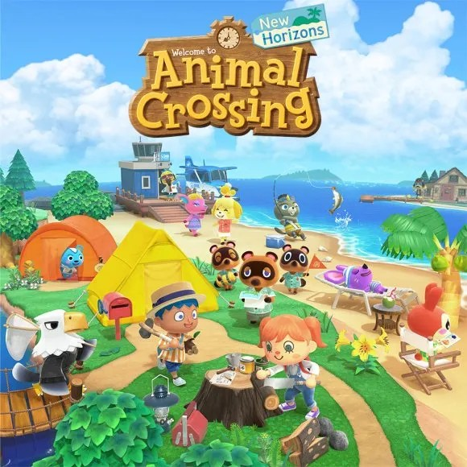

Sobre Nintendo Switch
Nintendo Switch es una consola híbrida lanzada en 2017 que permite jugar tanto en el televisor como en modo portátil. Gracias a su catálogo exclusivo y su versatilidad, se ha convertido en una de las consolas más vendidas de la historia.
A continuación encontrarás 5 juegos que no puedes perderte si tienes una Nintendo Switch.
Juegos recomendados
The Legend of Zelda: Breath of the Wild
Aventura / Mundo abiertoUn juego que redefinió los mundos abiertos. Explora Hyrule con total libertad, resuelve puzzles creativos, escala montañas y derrota enemigos usando el entorno a tu favor. Con más de 100 horas de contenido, es una experiencia que no olvidarás.

Super Mario Odyssey
Plataformas / AventuraMario regresa con una aventura 3D espectacular. Viaja por mundos llenos de secretos, usa a Cappy para poseer enemigos y objetos, y recoge Lunas de Poder para avanzar. Un juego alegre, creativo y lleno de sorpresas de principio a fin.

Mario Kart 8 Deluxe
Carreras / MultijugadorEl juego de carreras más divertido para jugar en compañía. Con más de 96 circuitos, múltiples modos de juego y soporte para hasta 4 jugadores en local o 12 en línea, es el título perfecto para cualquier reunión con amigos o familia.

Hollow Knight
Metroidvania / AcciónUn juego independiente que sorprende por su profundidad. Explora un vasto mundo subterráneo lleno de secretos, combates desafiantes y una historia misteriosa. Si te gustan los juegos de dificultad media-alta y los mundos con mucho lore, este es tu juego.

Animal Crossing: New Horizons
Simulación / Vida socialConstruye la isla de tus sueños a tu ritmo. Personaliza tu casa, cultiva frutas, pesca, atrapa insectos y haz amigos con los simpáticos vecinos animales. Ideal para desconectar y jugar sin presión en cualquier momento del día.

Resumen de juegos
| Juego | Género | Jugadores | Nota |
|---|---|---|---|
| The Legend of Zelda: Breath of the Wild | Aventura | 1 | 10/10 |
| Super Mario Odyssey | Plataformas | 1-2 | 9.5/10 |
| Mario Kart 8 Deluxe | Carreras | 1-4 / 12 online | 9/10 |
| Hollow Knight | Metroidvania | 1 | 9/10 |
| Animal Crossing: New Horizons | Simulación | 1-8 online | 8.5/10 |
| Todos los juegos están disponibles en la Nintendo eShop | |||